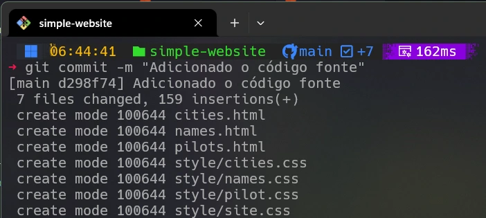
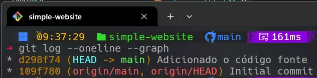
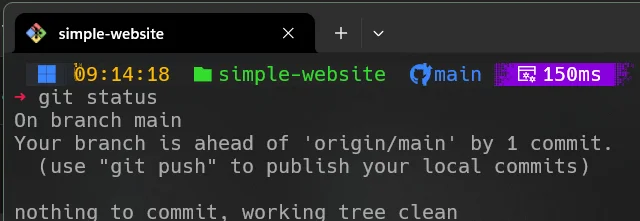
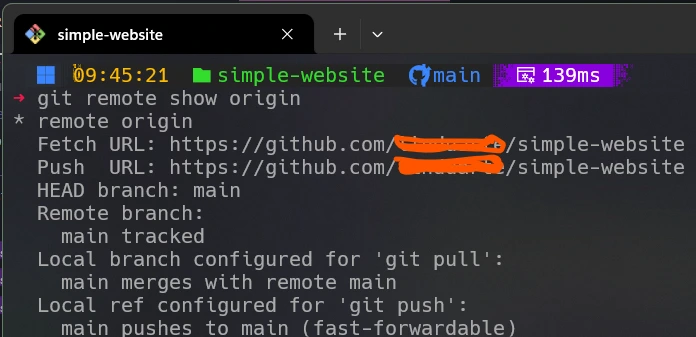
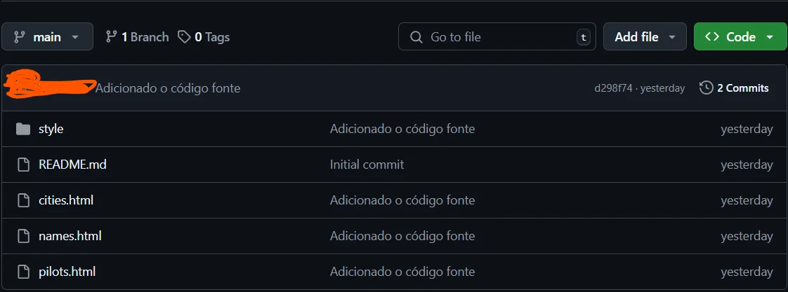
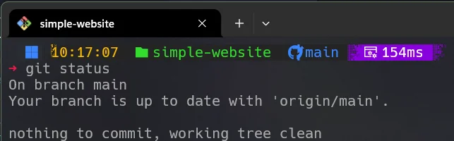

Essa forma do comando git commit --message "Arquivos iniciais do projeto adicionados" é muito usada quando você tem arquivos preparados que estão prontos para serem adicionados permanentemente
ao histórico do seu projeto e você quer documentar o que as mudanças envolvem. Ao incluir uma mensagem, você fornece contexto sobre esse ponto
específico no seu projeto, que é útil tanto para referência pessoal quanto para colaboração com os outros.
Temos uma situação particular de comite
em que não haja arquivos preparados mas quer se registrar um ponto na história do projeto. Para isso, você pode usar a opção --allow-empty
com o comando git commit. Isso cria um commit vazio, que pode ser útil para marcar um ponto no histórico do projeto sem adicionar alterações.
Outra forma de utilizar o commit é atualizando
o último commit adicionando as alterações preparadas no momento, alterando o hash do commit. O comando git commit --amend
representa o git comite amend.
O que vem a ser o hash: é um código único que identifica um commit. O hash é gerado a partir do conteúdo do commit e de seu histórico. O hash é uma sequência de 40 caracteres hexadecimais. O hash é único para cada commit e é usado para identificar um commit de forma única. Exemplo: commit d298f74fe5768dca084fd29d93bc24f48ad25088 - podemos usar os 7 primeiros caracteres para identificar o commit. Neste caso o hash é d298f74.
A imagem anterior mostra a ação de implementação do comando git commit com a mensagem utilizada para caracterizar a confirmação do commit. Pode-se notar ao lado da palavra 'main' o hash deste comite. Deve-se observar que cada hash é único, portanto ao implementar em seu projeto este comit hash será diferente.
A imagem anterior confirma o comite dos arquivos que foram adicionados ao repositório
A título ilustrativo usando um comando denominado "git log --oneline --graph" obtemos a relação de comits até então realizados no projeto. Nota-se os hashs associados a cada comit. Observe que as representações gráficas feitas pelo GitGraph mostram a aplicação destes commits e os hash associados. Vale salientar que o hash id=109f780 foi realizado ao se criar o repositório no GitHub. Nota-se tambem que ao lado do hash id=d298f74 se apresenta a mensagem usada no comit.
Podemos observar que na imagem existe uma mensagem dizendo que nosso ramo (branch) está a frente do seu repositório (origin?main) , ou seja no GitHub. Sugere que se use o comando 'git push' para enviar esta 'diferença' para o repositório remoto objetivando que os dois repositórios fiquem iguais.
A partir desta informação devemos proceder com a equalização dos repositórios usando o comando git push
que pode ser entendido como uma publicação no repositório remoto (GitHub)
Antes porem de procedermos com este comando devemos entender como o Git identifica o repositório remoto. Vamos usar então o git remote
A imagem acima mostra como o Git identifica o repositório remoto chamando-o de 'origin'.
Podemos buscar mais informações sobre este repositório remoto conforme mostra a imagem abaixo.
Na imagem acima podemos observar que o repositório remoto 'origin' é um repositório do tipo 'fetch' e 'push'. O 'fetch' é um comando que baixa os arquivos do repositório remoto para o repositório local. O 'push' é um comando que envia os arquivos do repositório local para o repositório remoto.
Para procedermos com a atualização do repertório remoto com a nova versão do projeto devemos usar o git push origin main
Caso voce faça o login on seu GitHub terá a visão mostrada na imagem abaixo.
Finalizando esta etapa podemos ver o status do repositório local em relação ao remoto indicando que os dois estão equalizados.
Diagrama Mermaid para o Git graph
Código Mermaid para o Git graph
%%{init: { 'logLevel': 'debug', 'theme': 'base', 'gitGraph': {'showBranches': true, 'showCommitLabel':true,'mainBranchOrder': 0}} }%%
gitGraph
commit id: "0-109f780"
commit id: "1-d298f74"